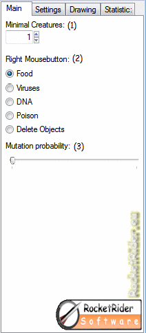
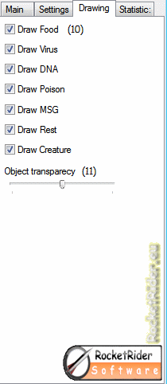
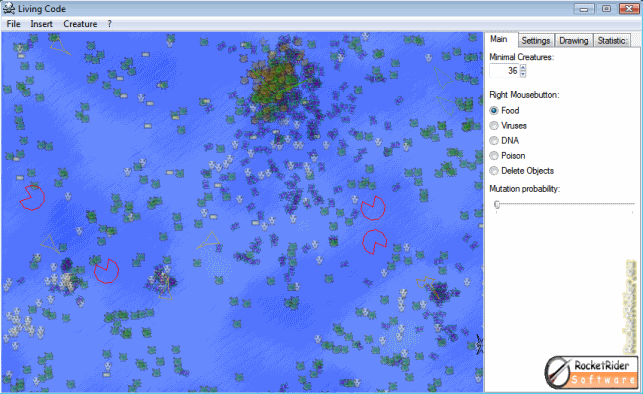
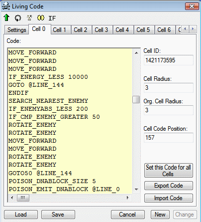
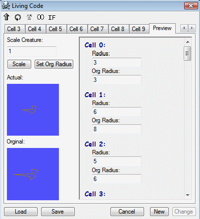
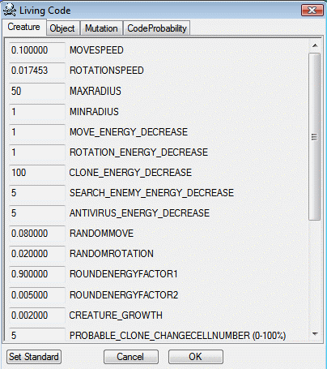

HILFE
|

|
(1)
Mit diesem Feld können sie
die
Mindestanzahl an Lebewesen setzen.
Standard wert ist 1.
(2)
Hier können sie auswählen, was sie auf der rechten
Maustaste setzen möchten.
Wenn sie z. B. „Food“
ausgewählt haben, können sie Nahrung setzen.
(3)
Mit diesem Regler können sie die Mutationsrate der Lebewesen
festlegen.
Um eine vernünftige Evolution zu erhalten muss
der wert möglichst gering sein.
|
|

|
(4)
Mit dem Hintergrund Modus, können die
Evolution im Hintergrund fortführen.
(5)
Mit der Pause Funktion können sie das Programm anhalten.
(6)
Wenn sie einen Merkern Prozessor haben können sie diese
Option einschalten, um eventuell mehr Geschwindigkeit zu
erhalten.
Diese Funktion ist aber nicht sicher, und kann auch
bei Merkern Prozessor langsamer sein.
(7)
Schaltet den Ton an.
(8)
Diese Option können sie manuell einstellen um die maximale
Geschwindigkeit zu erreichen.
(9)
Diese Option entlastet ihren Prozessor, allerdings wird dadurch
die Geschwindigkeit des des Programms reduziert.
|
|

|
(10)
Hier können sie einstellen welche
Objekte gezeichnet werden sollen.
(11)
Legt die Transparenz der Objekte fest.
|
|

|
(12)
Hier können sie die FPS ablesen.
Darunter
steht, wie lange das Programm schon läuft.
(13)
Hier können sie die Anzahl der Lebewesen und Objekte ablesen.
(14)
Hier sehen sie Informationen zu dem ausgewählten
Lebewesen.
Sie können ein Lebewesen auswählen in dem
sie darauf klicken.
|

Unter
dem Menü „Insert“ finden sie viele bereits
erstellte Lebewesen, unter dem Menüpunkt „Own Creature“
können sie eigene Lebewesen entwerfen.
Unter
dem Menüpunkt „Download Creatures“ können
sie weiter Lebewesen aus dem Internet herunter laden.
|

|
Wenn
sie eine Kreatur auswählen kommt folgendes Fenster.
Mit
„New“ können sie das Lebewesen erstellen.
Mit
„Change“ könnten sie die ausgewählte
Kreature bearbeiten.
Oder sie
können das Lebewesen mit „Upload“ ins
Internet Hochladen.
Über die Checkbox „Disable
Mutation“ kann die Mutation für ein Lebewesen
komplett abgeschalten werden. Dies ist nützlich, wenn sich
das Lebewesen nicht verändern soll.
|
|
Unter den
Zellen finden sie den jeweiligen Code, es kann für jede Zelle
einen Anderen Code definiert werden.
|
|
|

|
Außerdem
können sie noch den Radius der Zelle einstellen. Die Kreature
wächst vom Radius zum Original Zellradius.
Wenn sie eine
bestimmte Form erstellen möchten sollten sie den Vorschau
Modus verwenden.
Mit
einem Rechtsklick können sie das Insertmenü öffnen.
Dort
finden sie alle Befehle mit passendem Parameter.
Näheres
zu den Befehlen finden sie weiter unten unter „Befehl
Referenz“
|
|
Mit dem
Vorschau Tool können sie gut bestimmte formen für ihre
Lebewesen umsetzen.
|
|
|

|
Mit
„Set Org. Radius“ können sie den Org
Radius auf Radius setzen.
|
|
Unter
Optionen finden sie viele weiteren Einstellungen.
Dort können
sie jede Feinheit der Evolution einstellen.
|
|
|

|
|
|
Der
3DView Modus ist nur unter Windows DX7 möglich.
|
|
Befehls
Referenz
MOVE_FORWARD
Bewegt
das Lebewesen vorwärts.
MOVE_FORWARD2X
Bewegt
das Lebewesen doppelt so schnell vorwärts.
MOVE_BACKWARD
Bewegt
das Lebewesen rückwärts.
EATING_YES
Schaltet
die Nahrungsaufnahme der Zelle ein.
EATING_NO
Schaltet
die Nahrungsaufnahme der Zelle aus.
EATING_EMIT
Entsendet
Energie.
POISON_EMIT
ID
Entsendet Gift.
Parameter: gibt die ID des
Gifts an.
Wenn die ID eine gerade zahl ist lähmt das Gift die
gegnerische Zelle.
Wenn die ID eine ungerade zahl ist kostet das
Gift dem fremden Lebewesen Energie.
EMITTOENEMY_POISON
ID
Dies ist ähnlich
wie POISON_EMIT, aber dieser Befehl entsendet das Gift in die
Richtung des Feindes.
POISON_IMMUN1
ID
Macht die Zelle für
ein Gift immun.
Parameter: gibt die ID des Giftes an, gegen die
das Lebewesen, Immunisiert werden soll.
POISON_IMMUN2
ID
Macht die Zelle für
ein Gift immun.
Parameter: gibt die ID des Giftes an, gegen die
das Lebewesen, Immunisiert werden soll.
POISON_IMMUN3
ID
Macht die Zelle für
ein Gift immun.
Parameter: gibt die ID des Giftes an, gegen die
das Lebewesen, Immunisiert werden soll.
POISON_YES
Schaltet
das Erzeugen von Gift an.
Falls das Erzeugen ausgeschaltet ist
wird bei POISON_EMIT nichts gemacht.
POISON_NO
Schaltet
das Erzeugen von Gift aus.
Falls das Erzeugen ausgeschaltet ist
wird bei POISON_EMIT nichts gemacht.
POISON_VIRUS_MIN_ENERGY
MINENERGY
Setzt die
Mindestenergie, ab der keine Viren mehr erzeugt werden
sollen.
MINENERGY entspricht dem Energiewert.
POISON_EMIT_VIRUS
CODEPOSITION
Entsendet
einen Virus, der sich an der angegebenen Stelle im Code
einnistet.
Mögliche Werte sind hierbei 0-511.
Beispiel für
einen gefährlichen Virus:
POISON_VIRUS_MIN_ENERGY
0
POISON_EMIT_VIRUS 0
POISON_DNA_CODE
CODE
Setzt den Code für
POISON_EMIT_DNA.
Parameter: Befehl Z. B. 1 für
MOVE_BACKWARD
Siehe Anhang.
POISON_EMIT_DNA
CODEPOSITION
Entsendet die DNA, die sich an der angegebenen
Stelle im Code einnistet.
Parameter: Position im Code
EMITTOENEMY_DNA
CODEPOSITION
Dieser
Befehl ist ähnlich wie POISON_EMIT_DNA, aber dieser Befehl
entsendet die DNA in die Richtung des Feindes.
POISON_EMIT_DNABLOCK
SPRUNGMARKE
Entsendet
einen ganzen DNA Block, und nistet ihn an der selben stelle bei
anderen Lebewesen wieder ein.
Bsp:
@TEST
INC_CELL_RAD
POISON_DNABLOCK_SIZE
3
POISON_EMIT_DNABLOCK @TEST
EMITTOENEMY_DNABLOCK
SPRUNGMARKE
Dieser
Befehl ist ähnlich wie POISON_EMIT_DNABLOCK, aber dieser Befehl
entsendet die DNA in die Richtung des Feindes.
POISON_DNABLOCK_SIZE
SIZE
Definiert
die Länge des DNA Blocks, maximal 5 Zeilen.
MSG_EMIT
MSG
Gibt eine Nachricht
aus.
Parameter: Setzt die Nachricht-ID die übergeben werden
soll.
Bsp:
IF_ENERGY_LESS
1000
MSG_EMIT 500
ENDIF
ROTATE_LEFT
Rotieren
links.
ROTATE_RIGHT
Rotieren
rechts.
ROTATE_MSG
In
Richtung der letzten Nachricht Rotieren.
ROTATE_DNA
In
Richtung der letzten DNA Rotieren.
ROTATE_POISON
In
Richtung des letzten Giftes Rotieren.
ROTATE_FOOD
In
Richtung der Nahrung Rotieren.
ROTATE_ANTI_MSG
In
Entgegengesetzter Richtung der letzten Nachricht Rotieren.
ROTATE_ANTI_DNA
In
Entgegengesetzter Richtung der letzten DNA Rotieren.
ROTATE_ANTI_POISON
In
Entgegengesetzter Richtung des letzten Giftes Rotieren.
ROTATE_ANTI_FOOD
In
Entgegengesetzter Richtung der Nahrung Rotieren.
ROTATE_ENEMY
In
Richtung des nächsten Gegners Rotieren.
Benötigt
SEARCH_NEAREST_ENEMY
ROTATE_ANTI_ENEMY
In Entgegengesetzter Richtung des nächsten
Gegners Rotieren.
Benötigt SEARCH_NEAREST_ENEMY
IF_ENERGY_GREATER
WERT
Wenn
die Energie größer als der Parameter ist.
Es gibt keine
verschachtelte IFs, man kann aber trotzdem verschachteln.
Bsp:
IF_ENERGY_GREATER
5000
...
ENDIF
IF_ENERGY_LESS
WERT
Wenn
die Energie kleiner als der Parameter ist.
IF_ENERGY_EQUAL
WERT
Wenn
die Energie gleich dem Parameter ist.
IF_ENERGYINC_GREATER
WERT
Wenn
der Energiezuwachs größer als der Parameter ist.
IF_ENERGYDEC_GREATER
WERT
Wenn
der Energieverlust größer als der Parameter ist.
IF_MSG_GREATER
WERT
Wenn
Nachricht-ID größer als der Parameter ist.
IF_MSG_LESS
WERT
Wenn
Nachricht-ID kleiner als der Parameter ist.
IF_MSG_EQUAL
WERT
Wenn
Nachricht-ID gleich dem Parameter ist.
IF_FOOD_GREATER
WERT
Wenn
die Anzahl der aufgenommen Nahrung, seit dem letzten Aufruf des
Befehls, größer als der Parameter ist.
IF_FOOD_LESS
WERT
Wenn
die Anzahl der aufgenommen Nahrung, seit dem letzten Aufruf des
Befehls, kleiner als der Parameter ist.
IF_FOOD_EQUAL
WERT
Wenn
die Anzahl der aufgenommen Nahrung, seit dem letzten Aufruf des
Befehls, gleich als der Parameter ist.
IF_POISON_GREATER
WERT
Wenn
die Anzahl des aufgenommen Giftes, seit dem letzten Aufruf des
Befehls, größer als der Parameter ist.
IF_POISON_LESS
WERT
Wenn
die Anzahl des aufgenommen Giftes, seit dem letzten Aufruf des
Befehls, kleiner als der Parameter ist.
IF_POISON_EQUAL
WERT
Wenn
die Anzahl des aufgenommen Giftes, seit dem letzten Aufruf des
Befehls, gleich als der Parameter ist.
IF_POISONID_GREATER
WERT
Wenn
die Gift ID größer als der Parameter ist.
IF_POISONID_LESS
WERT
Wenn
die Gift ID kleiner als der Parameter ist.
IF_POISONID_EQUAL
WERT
Wenn
die Gift ID gleich dem Parameter ist.
IF_DNA_GREATER
WERT
Wenn
die Anzahl der aufgenommen DNA, seit dem letzten Aufruf des Befehls,
größer als der Parameter ist.
IF_DNA_LESS
WERT
Wenn
die Anzahl der aufgenommen DNA, seit dem letzten Aufruf des Befehls,
kleiner als der Parameter ist.
IF_DNA_EQUAL
WERT
Wenn
die Anzahl der aufgenommen DNA, seit dem letzten Aufruf des Befehls,
gleich als der Parameter ist.
IF_VARIABLE_GREATER
WERT
Wenn
Variable größer als der Parameter ist.
Die Variable
kann mit dem Befehl "VARIABLE" ausgewählt
werden.
Bsp.:
VARIABLE
@A
@A
DL 0
IF_VARIABLE_LESS
WERT
Wenn
der Variableninhalt kleiner als der Parameter ist.
IF_VARIABLE_EQUAL
WERT
Wenn
der Variableninhalt gleich dem Parameter ist.
IF_CELL_RAD_GREATER
WERT
Wenn
Zellradius größer als der Parameter ist.
IF_CELL_RAD_LESS
WERT
Wenn
Zellradius kleiner als der Parameter ist.
IF_CELL_RAD_EQUAL
WERT
Wenn
Zellradius gleich dem Parameter ist.
IF_X_GREATER
WERT
Wenn X
größer als der Parameter ist.
IF_X_LESS
WERT
Wenn X
kleiner als der Parameter ist.
IF_X_EQUAL
WERT
Wenn X
gleich dem Parameter ist.
IF_Y_GREATER
WERT
Wenn Y
größer als der Parameter ist.
IF_Y_LESS
WERT
Wenn Y kleiner als
der Parameter ist.
IF_Y_EQUAL
WERT
Wenn Y gleich dem
Parameter ist.
IF_ENEMYABS_GREATER
WERT
Wenn
der Abstand zum nächsten Gegner größer als der
Parameter ist.
IF_ENEMYABS_LESS
WERT
Wenn
der Abstand zum nächsten Gegner kleiner als der Parameter ist.
IF_ENEMYABS_EQUAL
WERT
Wenn
der Abstand zum nächsten Gegner gleich dem Parameter ist.
IF_CMP_ENEMY_GREATER
WERT
Überprüft
den Generationen Unterschied zwischen dem Lebewesen, und dem Nächsten
Feind.
IF_CMP_ENEMY_LESS
WERT
Überprüft
den Generationen Unterschied zwischen dem Lebewesen, und dem Nächsten
Feind.
IF_CMP_ENEMY_EQUAL
WERT
Überprüft
den Generationen Unterschied zwischen dem Lebewesen, und dem Nächsten
Feind.
IF_GENERATION_GREATER
WERT
Wenn
die Generation ID größer als der Parameter ist.
IF_GENERATION_LESS
WERT
Wenn
die Generation ID kleiner als der Parameter ist.
IF_GENERATION_EQUAL
WERT
Wenn
die Generation ID gleich dem Parameter ist.
IF_NUMOFCELLS_GREATER
WERT
Wenn
die Anzahl der Zellen größer als der Parameter ist.
IF_NUMOFCELLS_LESS
WERT
Wenn
die Anzahl der Zellen kleiner als der Parameter ist.
IF_NUMOFCELLS_EQUAL
WERT
Wenn
die Anzahl der Zellen gleich dem Parameter ist.
IF_CELLNUMER_GREATER
WERT
Wenn
die Zellnummer größer als der Parameter ist.
IF_CELLNUMER_LESS
WERT
Wenn die
Zellnummer kleiner als der Parameter ist.
IF_CELLNUMER_EQUALWERT
Wenn die Zellnummer gleich dem Parameter ist.
IF_MALE
Wenn
das Lebewesen männlich ist.
IF_FEMALE
Wenn das Lebewesen weiblich ist.
IF_AGE_GREATER
WERT
Wenn
das Lebewesen älter als der Parameter ist.
IF_AGE_LESS
WERT
Wenn
das Lebewesen jünger als der Parameter ist.
IF_AGE_EQUAL
WERT
Wenn
das Lebewesen so alt wie der Parameter ist.
IF_ABSORBABLE
Wenn
ABSORBABLE_YES gesetzt ist.
ENDIF
Ende
der If-Bedingung.
CLONE
Kopiert
das Lebewesen
COPY_MIN_ENERGY
ENERGY
Setzt die
Mindestenergie für das Kopieren.
COPY50_50
50:50
Verteilung der Energie beim Kopieren.
COPY25_75
25:75
Verteilung der Energie beim Kopieren.
COPY5_95
5:95
Verteilung der Energie beim Kopieren.
COMBINECOPY
Das
Lebewesen kreuzt sich mit dem nächsten Lebewesen.
RETURN
Beginnt
den Code von Anfang an.
GOTO
SPRUNGMARKE
Geht zur
Angegebenen Sprungmarke.
Bsp:
@A
GOTO
@A
GOTO50
SPRUNGMARKE
Geht zur
Angegebenen Sprungmarke.
Die Wahrscheinlichkeit das der Befehl
aufgeführt wird ist 50%
GOTO25
SPRUNGMARKE
Geht zur
Angegebenen Sprungmarke.
Die Wahrscheinlichkeit das der Befehl
aufgeführt wird ist 25%
GOTO5
SPRUNGMARKE
Geht zur
Angegebenen Sprungmarke.
Die Wahrscheinlichkeit das der Befehl
aufgeführt wird ist 5%
RNDGOTO
Führt
den Code an einer zufälligen Position weiter.
VARIABLE
VARIABLE
Setzt die
aktive Variable.
Bsp.:
VARIABLE
@A
@A
DL 0
VARIABLE_ZERO
Setzt
die aktive Variable auf 0.
VARIABLE_DEC
Reduziert
die aktive Variable um 1.
VARIABLE_INC
Erhöht
die aktive Variable um 1.
VARIABLE_SET
WERT
Setzt
die aktive Variable auf den angegebenen Wert.
VARIABLE_ADD
WERT
Erhöht
die aktive Variable um den angegebenen Wert.
VARIABLE_SUB
WERT
Reduziert
die aktive Variable um den angegebenen Wert.
VARIABLE_MUL
WERT
Multipliziert
die aktive Variable mit dem angegebenen Wert.
VARIABLE_DIV
WERT
Dividiert
die aktive Variable mit dem angegebenen Wert.
VARIABLE_XOR
WERT
Verknüpft
den Wert der aktiven Variable mit dem angegebenen Wert mit einer
binären XOR-Verknüpfung.
VARIABLE_OR
WERT
Verknüpft
den Wert der aktiven Variable mit dem angegebenen Wert mit einer
binären ODER-Verknüpfung.
VARIABLE_AND
WERT
Verknüpft
den Wert der aktiven Variable mit dem angegebenen Wert mit einer
binären UND-Verknüpfung.
VARIABLE_MOD
WERT
Führt
eine Division der aktiven Variable durch den Angegebenen Wert durch
und speichert den Rest in der aktiven Variable.
VARIABLE_COPY
VARIABLE
Kopiert die
aktuelle Variable in die angegebene Variable.
Bsp:
VARIABLE
@A
VARIABLE_COPY @B
@A
DL 0
@B
DL 0
VARIABLE_RND
Setzt
die aktuelle Variable auf einen zufälligen wert.
INC_CELL_RAD
Vergrößert
den Zellradius um 1.
DEC_CELL_RAD
Verkleinert
den Zellradius um 1.
SIN_CELL_RAD
SPEED
Ändert
den Zellradius Sinusförmig.
Bsp:
SIN_CELL_AMPRAD
20
SIN_CELL_MIDRAD 30
SIN_CELL_RAD 20
SIN_CELL_AMPRAD
AMP
Setzt die Amplitude
für die Sinus förmige Radiusänderung.
SIN_CELL_MIDRAD
MID
Setzt den
Mittelpunkt für die Sinus förmige Radiusänderung.
TIMER_SET
TIME
Definiert
die Zeit nach der der Timer zur mit TIMER_GOTO angegebenen
Sprungmarke springen soll.
Bsp:
@Timer
TIMER_SET
500
TIMER_GOTO @Timer
TIMER_YES
...
TIMER_GOTO
SPRUNGMARKE
Definiert
die Sprungmarke an die der Timer springen soll.
TIMER_YES
Schaltet
die Timer Funktion ein.
TIMER_NO
Schaltet die Timer Funktion aus.
SEARCH_NEAREST_ENEMY
Sucht
nach dem nächsten Gegner, wird für folgende Befehle
benötigt:
IF_ENEMYABS_GREATER
IF_ENEMYABS_LESS
IF_ENEMYABS_EQUAL
IF_CMP_ENEMY_GREATER
IF_CMP_ENEMY_LESS
IF_CMP_ENEMY_EQUAL
ROTATE_ENEMY
ROTATE_ANTI_ENEMY
DEST_POINT_X
WERT
Setzt
die x Position für folgende Befehle:
ROTATE_DEST_POINT
ROTATE_ANTI_DEST_POINT
DEST_POINT_Y
WERT
Setzt
die y Position für folgende Befehle:
ROTATE_DEST_POINT
ROTATE_ANTI_DEST_POINT
PAUSE
Dieser
Befehl legt die Zelle für eine Ausführung lahm.
ANTIVIRUS
Dieser
Befehl überprüft eine zufällige Stelle im Code auf
eine Virusinfektion und entfernt diese.
Dieser
Befehl verbraucht allerdings Energie.
PROTECTVIRUS
Dieser
Befehl schützt vor der Infektion von Viren.
Die Anzahl an
Viren die nicht infiziert werden wird in den Optionen festgelegt,
standardmäßig ist 5 eingestellt.
PROTECTDNA
Dieser
Befehl schützt vor der Infektion von DNA.
Die Anzahl an DNA
die nicht infiziert wird, wird in den Optionen festgelegt,
standardmäßig ist 2 eingestellt.
MUTATE
Mutiert
zufüllig.
MUTATE_LINE
@LINE
Mutiert
die angegebene Zeile bevor sie ausgeführt wird.
BLOCKEXEC
@POS
Verhindert codeausführung
an der angegebenen position, führt dafür den mit
REPLACEMENT_CMD definierten Befehl aus.
@line_0
MUTATE
...
REPLACEMENT_CMD
4
BLOCKEXEC @line_0
EMITTOENEMY_FOOD
Entsendet
Nahrung in Richtung des Feindes.
EMITTOENEMY_MSG
MSGID
Entsendet
eine Nachricht in Richtung des Feindes.
REPLACEMENT_CMD
CODE
Definiert
den Befehl mit dem ersetzt werden soll.
Der Befehl wird für
BLOCKEXEC und REPLACE_CMD benötigt.
REPLACE_CMD
CODE
Ersetzt
den angegebenen code durch den mit REPLACEMENT_CMD angegeben code, an
einer zufälligen Stellen im Code.
REPLACEMENT_CMD
0
REPLACE_CMD 4
VARIABLE_GETGLOBAL
Liest
globale Variable für die Creature aus und speichert den Wert in
der aktiven Variable.
VARIABLE_SETGLOBAL
Speichert
den Wert aus der aktiven Variable in die gobale Variable für die
Creature.
VARIABLE
@TEST
VARIABLE_SETGLOBAL
...
@TEST
DB 0
ABSORBABLE_YES
Andere
Lebewesen können ihre Energie absorbieren.
ABSORBABLE_NO
Andere
Lebewesen können ihre Energie nicht absorbieren.
Dies ist
Standardmäßig eingestellt.
ABSORB_ENEMY
Mit
dieser Funktion können sie anderen Lebewesen die Energie
absorbieren,
aber das andere Lebewesen muss ABSORBABLE_YES aktiviert haben.
NOP
Keine
Operation.
Beispiel
Codes:
Ein
einfaches Beispiel:
MOVE_FORWARD
ROTATE_FOOD
RETURN
Ein
Selbst modifizierender Code für Experten:
@ANF
VARIABLE
@VAR
VARIABLE_ADD 256
@VAR
DL 2626
VARIABLE_SET 4
GOTO
@ANF
Anhang,
Code Nummern:
0
= MOVE_FORWARD
1 = MOVE_BACKWARD
2 = EATING_YES
3 =
EATING_NO
4 = EATING_EMIT
5 = POISON_EMIT
6 =
POISON_IMMUN1
7 = POISON_IMMUN2
8 = POISON_IMMUN3
9 =
POISON_YES
10 = POISON_NO
11 = POISON_VIRUS_MIN_ENERGY
12 =
POISON_EMIT_VIRUS
13 = POISON_DNA_CODE
14 = POISON_EMIT_DNA
15 = POISON_EMIT_DNABLOCK
16 = POISON_DNABLOCK_SIZE
17 =
MSG_EMIT
18 = ROTATE_LEFT
19 = ROTATE_RIGHT
20 =
ROTATE_MSG
21 = ROTATE_DNA
22 = ROTATE_POISON
23 =
ROTATE_FOOD
24 = ROTATE_ANTI_MSG
25 = ROTATE_ANTI_DNA
26 =
ROTATE_ANTI_POISON
27 = ROTATE_ANTI_FOOD
28 =
IF_ENERGY_GREATER
29 = IF_ENERGY_LESS
30 = IF_ENERGY_EQUAL
31
= IF_ENERGYINC_GREATER
32 = IF_ENERGYDEC_GREATER
33 =
IF_MSG_GREATER
34 = IF_MSG_LESS
35 = IF_MSG_EQUAL
36 =
IF_FOOD_GREATER
37 = IF_FOOD_LESS
38 = IF_FOOD_EQUAL
39 =
IF_POISON_GREATER
40 = IF_POISON_LESS
41 = IF_POISON_EQUAL
42
= IF_POISONID_GREATER
43 = IF_POISONID_LESS
44 =
IF_POISONID_EQUAL
45 = IF_DNA_GREATER
46 = IF_DNA_LESS
47 =
IF_DNA_EQUAL
48 = IF_VARIABLE_GREATER
49 = IF_VARIABLE_LESS
50
= IF_VARIABLE_EQUAL
51 = IF_CELL_RAD_GREATER
52 =
IF_CELL_RAD_LESS
53 = IF_CELL_RAD_EQUAL
54 = ENDIF
55 =
CLONE
56 = COPY_MIN_ENERGY
57 = COPY50_50
58 = COPY25_75
59
= COPY5_95
60 = RETURN
61 = GOTO
62 = GOTO50
63 =
GOTO25
64 = GOTO5
65 = RNDGOTO
66 = VARIABLE
67 =
VARIABLE_ZERO
68 = VARIABLE_DEC
69 = VARIABLE_INC
70 =
VARIABLE_SET
71 = INC_CELL_RAD
72 = DEC_CELL_RAD
73 =
SIN_CELL_RAD
74 = SIN_CELL_AMPRAD
75 = SIN_CELL_MIDRAD
76 =
VARIABLE_ADD
77 = VARIABLE_SUB
78 = VARIABLE_MUL
79 =
VARIABLE_DIV
80 = VARIABLE_XOR
81 = VARIABLE_OR
82 =
VARIABLE_AND
83 = VARIABLE_MOD
84 = TIMER_SET
85 =
TIMER_GOTO
86 = TIMER_YES
87 = TIMER_NO
88 =
IF_X_GREATER
89 = IF_X_LESS
90 = IF_X_EQUAL
91 =
IF_Y_GREATER
92 = IF_Y_LESS
93 = IF_Y_EQUAL
94 =
IF_ENEMYABS_GREATER
95 = IF_ENEMYABS_LESS
96 =
IF_ENEMYABS_EQUAL
97 = ROTATE_ENEMY
98 = ROTATE_ANTI_ENEMY
99
= SEARCH_NEAREST_ENEMY
100 = IF_CMP_ENEMY_GREATER
101 =
IF_CMP_ENEMY_LESS
102 = IF_CMP_ENEMY_EQUAL
103 =
DEST_POINT_X
104 = DEST_POINT_Y
105 = ROTATE_DEST_POINT
106
= ROTATE_ANTI_DEST_POINT
107 = VARIABLE_COPY
108 = PAUSE
109
= ANTIVIRUS
110 = PROTECTVIRUS
111 = COMBINECOPY
112 =
IF_GENERATION_GREATER
113 = IF_GENERATION_LESS
114 =
IF_GENERATION_EQUAL
115 = IF_NUMOFCELLS_GREATER
116 =
IF_NUMOFCELLS_LESS
117 = IF_NUMOFCELLS_EQUAL
118 =
IF_CELLNUMER_GREATER
119 = IF_CELLNUMER_LESS
120 =
IF_CELLNUMER_EQUAL
121 = IF_MALE
122 = IF_FEMALE
123 =
IF_AGE_GREATER
124 = IF_AGE_LESS
125 = IF_AGE_EQUAL
126
= VARIABLE_RND
127 = MOVE_FORWARD2X
128 = MUTATE
129 =
MUTATE_LINE
130 = BLOCKEXEC
131 = EMITTOENEMY_FOOD
132 =
EMITTOENEMY_MSG
133 = REPLACEMENT_CMD
134 = REPLACE_CMD
135
= VARIABLE_GETGLOBAL
136 = VARIABLE_SETGLOBAL
137 =
ABSORBABLE_YES
138 = ABSORBABLE_NO
139 = ABSORB_ENEMY
140 =
IF_ABSORBABLE
141 = EMITTOENEMY_POISON
142 = EMITTOENEMY_DNA
143 = EMITTOENEMY_DNABLOCK
144 = PROTECTDNA
145 = NOP
(c)2008
RocketRider
http://www.RocketRider.eu